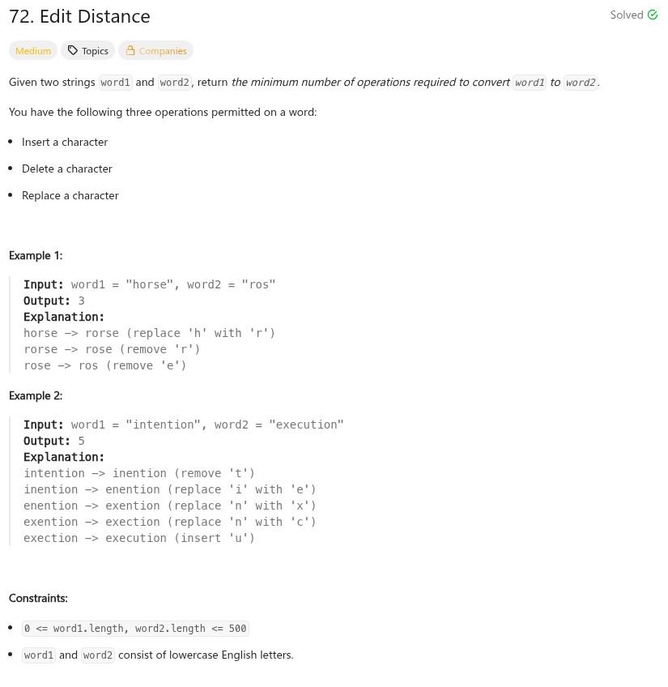
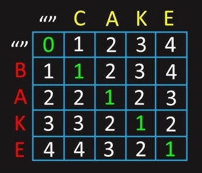

參考資訊：
https://www.youtube.com/watch?v=reICpCoC97Y
https://www.cnblogs.com/grandyang/p/4344107.html
題目：


int min(int a, int b)
{
return a > b ? b : a;
}
int minDistance(char *word1, char *word2)
{
int i = 0;
int j = 0;
int w1_len = strlen(word1);
int w2_len = strlen(word2);
int dp[501][501] = { 0 };
for (i = 0; i <= w1_len; i++) {
dp[i][0] = i;
}
for (j = 0; j <= w2_len; j++) {
dp[0][j] = j;
}
for (i = 1; i <= w1_len; i++) {
for (j = 1; j <= w2_len; j++) {
if (word1[i - 1] == word2[j - 1]) {
dp[i][j] = dp[i - 1][j - 1];
}
else {
dp[i][j] = min(dp[i - 1][j - 1], min(dp[i - 1][j], dp[i][j - 1])) + 1;
}
}
}
return dp[w1_len][w2_len];
}